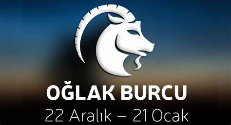

Sevgili Akrepler ve yükselen burcu Akrep olanlar, 24 Şubat’ta Mars’ın Yengeç burcundaki retrosunun sona erip ileri hareketine geçmesi, öğrenme ve kişisel inançlar konusunda önemli bir döneme işaret ediyor. Bu dönemde, daha önce tıkanmış ya da ertelenmiş projeler, seyahat planları veya eğitimle ilgili girişimler hız kazanabilir. Ancak, yeniden hızlanmadan önce biraz zaman alıp stratejik düşünmek faydalı olacaktır. Özellikle düşünsel ve entelektüel alanlarda atacağınız adımlar daha cesur ve kararlı olabilir, fakat buna karar verirken kendinizi netleştirmeniz önemlidir. Hedeflerinize ulaşmak için, uzun vadeli bir bakış açısıyla hareket etmelisiniz. Bu dönemde fikirlerinizi geniş bir perspektiften ele almak, daha büyük fırsatlar ve keşifler için kapı açabilir. Ancak, Mars’ın hareketi sizi yerinden oynatabilir, yeni fırsatlar arayışına girebilir, fakat acele etmemenizde fayda var. Zihinsel ve duygusal uyumu sağlayarak, en doğru adımları atabilirsiniz. 28 Şubat’taki Balık Yeniayı ise, sizi yaratıcı yönlerinizden daha fazla faydalanmaya çağırıyor. Özellikle romantizm, hobiler ve kişisel eğlencenizle ilgili önemli farkındalıklar yaşayabilirsiniz. Bu Yeniay, size eğlenceli, kendinizi ifade etme arzusuyla dolu bir enerji sunuyor. Yaratıcılığınızı keşfetmek, projelere ve insanlara olan tutkunuzu yeniden canlandırmak için mükemmel bir zaman. Ancak, aşırıya kaçmadan ve gerçekçi sınırlar içinde kalarak ilerlemeniz gerektiğini unutmamalısınız. Ayrıca, bu dönemde aşk hayatınızda veya ilişkilerinizde daha fazla duygu ve tutkuyu beslemeniz, sizden beklenenin ötesinde bir derinlik oluşturabilir. Ancak, duygusal yoğunluğunuz arttıkça, gerçekçi ve sağlıklı sınırlar koymaya özen gösterin. Kendinizi ifade etmek ve eğlenmek, daha büyük içsel tatminler yaratabilir.
Sevgili Boğalar ve yükselen burcu Boğa olanlar, 24 Şubat’ta Mars’ın Yengeç burcundaki retrosunu bitirip ileri hareketine geçmesi, iletişim ve öğrenme konularında size önemli fırsatlar sunabilir. Mars, zihinsel enerjinizi harekete geçirecek ve düşüncelerinizi daha hızlı, etkili bir şekilde paylaşmanıza yardımcı olacak. Ancak retro sürecinin ardından şimdi, geçmişte tamamlanmamış projeler ya da yanlış anlaşılmalarla ilgili netleşmeler olabilir. Özellikle kardeşler veya yakın çevrenizdeki kişilerle iletişimi güçlendirmek, eski tartışmaları çözmek için ideal bir dönemdesiniz. Bu dönemde, düşüncelerinizi düzgün bir şekilde ifade etmeniz önem kazanacak. Hızlı düşünceler ve ani çıkışlar yapmaktan kaçının, doğru adımlar atarak, ilişkilerinizdeki yanlış anlamaları gidererek hem ruhsal hem de zihinsel dengeyi yakalayabilirsiniz. Ayrıca, kişisel projelerinizde yeni bir yön seçmek, yaratıcı fikirleri hayata geçirmek için güçlü bir zaman dilimindesiniz.
Sevgili Oğlaklar ve yükselen burcu Oğlak olanlar, 24 Şubat’ta Mars’ın Yengeç burcundaki retrosunun sona erip tekrar ileri harekete geçmesi, ilişkiler alanında belirgin etkiler yaratacak. Bu dönemde, ikili ilişkilerde ve ortaklıklarda yeni bir döneme giriyorsunuz. Özellikle geçmişteki engeller veya yarım kalan meseleler, çözülmeye başlayacak. Ancak, Mars’ın hareketiyle birlikte bu süreçte aceleci olmamak önemli; duygusal çatışmalardan kaçınmak ve sağlıklı sınırlar koymak sizin için ön planda olmalı. Bir ilişkide ya da ortaklıkta daha fazla özgürlük ve bağımsızlık talep edebilirsiniz, ancak bunun karşılıklı bir dengeyle olması gerektiğini unutmamalısınız. Başkalarıyla olan etkileşimlerinizde, duygusal olarak daha dürüst ve cesur bir tutum takınmanız, ilişkilerinizi sağlamlaştırabilir. Eski sorunların tekrar gündeme gelmesi ya da daha önce göz ardı ettiğiniz meselelerin önünüze çıkması da mümkün. Bunlarla yüzleşmek, sağlıklı adımlar atmak için doğru zamanı yakalıyorsunuz.